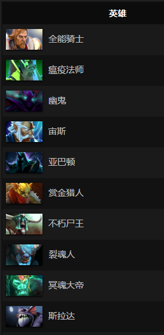

About
Dota2
DOTA2是由DotA之父Icefrog主创打造的唯一正统续作，其完整继承了原作DotA超过一百位的英雄。DOTA2的玩法和DotA完全相同，通过顶级的系统、美术和功能，呈现出了超越经典且原味十足的体验感觉。
TI6
2016
08.08
西雅图钥匙体育馆
法兰克福特锦赛
首届DOTA2特级锦标赛在11月16日至21日于德国法兰克福的法兰克福展览中心Festhalle多功能厅举行，为期六天。届时16支战队将在主赛事上围绕300万美元的总奖金展开激烈的角逐。
上海特级锦标赛
上海特级锦标赛的主赛事于3月2日——3月6日，在中国上海梅赛德斯奔驰文化中心进行共5天的较量，16支战队将在双败淘汰制下竞相角逐300万美元的总奖金，本届大赛将由完美世界主办。
马尼拉特级锦标赛
马尼拉特级锦标赛由PGL负责制作，主赛事将于6月7日至12日在菲律宾马尼拉的亚洲商业中心体育馆举行。这将是各大战队在2016年国际邀请赛前证明自己是世界顶尖队伍的最后机会
The Big Data of Dota2
英雄数据统计
塔
从右侧数据图可以看出，新版本强势的几位英雄分别是：全能，幽鬼，尸王等。天梯高端局常常出现一抢尸王的现象。瘟疫法师和宙斯也是榜上有名，主要得益于玲珑心这件新装备的出现。简单的说，新版本法核强势崛起，主张中期干架求团。
而新版本看似大幅加强的炼金术士，德鲁伊却是胜率倒数第一和第三。新版本炼金能给队友送A杖看似很美好，但实际情况往往是炼金自己装备还没出完比赛就已经结束了，更不用说帮队友出A杖了。德鲁伊同理，虽然加强了后期能力，但是6.84节奏比6.83更快，比赛往往在30、40分钟就已经结束，后期能力也就没有意义。
由于改动之后瘟疫法师的竭心光环可以作用于远古单位，就有网友就研究出了瘟疫法师一级点竭心光环无伤烧野，九分钟假腿梅肯的套路。不得不说和当时美杜莎一级刷远古的效率不相上下。
超级奶爸全能骑士表现依旧出彩，不仅挤掉了瘟疫法师荣登第一的宝座，其胜率也比上周的瘟疫法师更高，照目前的势头来看，胜率突破60%指日可待。不朽尸王终于证明了自己，第七的排名对他来说是一个不错的成绩；反观上周火爆的剧毒术士已经不知道跌到哪里去了，酱油之间的战斗真是愈演愈烈。
数据分析 上海特级锦标赛
- 最热门出场英雄.....................祈求者
- KDA最高英雄........................斯拉克
- 金钱最多的土豪.....................炼金术士
“
Steam中，Dota2两周内的平均在线时长为26:57个小时，以76.75%总占有率位居第一。Dota2中国玩家占全世界总数的7.29%，目前排行第三，其它两位分别是排名第一的俄罗斯(17.21%)以及紧随其后的美国(11.42%)
”